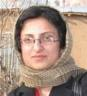
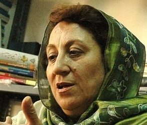
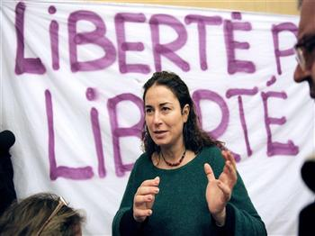

تغییر برای برابری
تغییر برای برابریدر زمان رضا شاه پهلوی در سال 1314 شمسی که کشف حجاب اجباری شد و به سبب آن، زنان معتقد به حفظ حجاب مومنانه با حکومت درگیر شدند و باری دیگر از سال 1357 که زنان معتقد به آزادی در انتخاب حجاب و مخالف با حجاب اجباری، با حکومت در گیر شده اند که همچنان ادامه دارد. گذار تاریخی زن ایرانی به قرن بیست و یکم میلادی چنان بوده که گوئی تاریخ معاصر ایران را با همه ی مصیبت های آن روی تن زنان نوشته اند.
پذيرش > واژه كليدها > صفحه بندی > ستون وسط
ستون وسط
مقالهها
-
 سیاستهای مرتبط با بدن زن (3)، مهرانگیز کار
سیاستهای مرتبط با بدن زن (3)، مهرانگیز کار
1 مه 2013, بوسيلهى pari -
 "چهل روز بی بهاره"،"چهل روز با بهاره"
"چهل روز بی بهاره"،"چهل روز با بهاره"
5 ژوئن 2011مرگ یک دوست صمیمی، یک انسان کم سن اما بزرگ منش، سخت است، دردناک است. اما بهاره این بار به من آموخت که شبح ترسناک مرگ در برابر بزرگی یک انسان هیچ است. واقعیت مرگ بالاخره یک روز میآید، اما انسان میتواند در فنای مرگ، جاوید بماند. مثل بهاره و بهارها...
-
 مروری کوتاه بر پنجاه و هفتمین نشست کمیسیون وضعیت زنان / پریسا کاکائی
مروری کوتاه بر پنجاه و هفتمین نشست کمیسیون وضعیت زنان / پریسا کاکائی
23 مارس 2013بنیادگرایی دینی و تاثیر آن بر وضعیت زنان و دگرباشان نیز یکی از مباحث مطرح به ویژه در کشورهای منطقه بود. در جلسات مربوطه سعی شد که استراتژی های بنیادگرایان و پاسخ های فمینیست ها به آنها در کشورهای مختلف بررسی شود. به نظر می رسد رویکرد مشترکی که بنیادگرایان دینی چه اسلامی و چه مسیحی در پیش گرفته اند بهره بردن از پیام های برانگیزاننده عواطف و احساسات برای ارتباط گیری با جامعه و تاثیرگذاری هر چه بیشتر به ویژه در زمینه سقط جنین و حقوق دگرباشان است. در همین رابطه گروه های مختلف فمینیستی تجربه مبارزات خود از جمله کمپین ها و به چالش کشیدن مقام های مذهبی در بحث های عمومی را به اشتراک گذاشتند.
-
 «هيچ» را انجام بده/ روزبه كريمي
«هيچ» را انجام بده/ روزبه كريمي
23 سپتامبر 2009, بوسيلهى pariاز فعالان زن انتظار ميرود كه سرمايه كمپيني و ... را وسط بگذارند و به سود جنبش مردم خرج كنند؛ اگرچه به مثابه يك فعال زن يا فمنيست، در حركات «مردم»، كنار آنها باشند. رسانههاي جنبشي و اختصاصيشان، بيانيهها و ميتينگهايشان را حفظ كنند، اما براي امدادرساني به خواست كلي و عمومي «مردم»، و نه براي اشاره به هويتي ثابت و اختصاصي.
-
فضاي باز انتخاباتي؛ واقعيت يا توهم
11 مه 2009در حالی که طبق روال این سی سال، نزدیک شدن به زمان انتخابات با گشایش نسبی فضای اجتماعی و سیاسی همراه بوده، اما وقایع سال جدید از جمله بازداشت چندین نفر از فعالان زنان و کمپین به هنگامی که عازم عیددیدنی بودند، احضار و بازداشت مریم مالک ، حکم یکسال حبس تعزیری برای پرستو اللهیاری به جرم "عضویت در تشکیلات کمپین یک میلیون امضا" سرکوب خشونت بار تجمع اول ماه می در پارک لاله، احضار و باز داشت دهها تن از فعالین کارگری، نشان از روندی متفاوت دارد...
-
۲۰۰۰ امضا در مخالفت با محدودیتهای جدید لایحه گذرنامه برای زنان
25 فوريه 2013امروز دوشنبه ۷ اسفند تنی چند از فعالان زن از شهرهای مختلف در اعتراض به لایحه گذرنامه به همراه ۲۰۰۰ امضا زنان و مردانی که مخالف قید کمیسیون امنیت ملی جهت اخذ رضایت ولی برایزنان بالای 18 سال در لایحه گذرنامه هستند به مجلس رفتند و با فاطمه رهبر، رئیس فراکسیون زنان ملاقات کردند.
-

کمپین یک میلیون امضا پس از جنبش سبز / فروغ سمیع نیا
17 دسامبر 2009, بوسيلهى pariکمپین باید بتواند جای خود را در این جنبش بزرگ مردمی حفظ کند و تا رسیدن به مطالبات خود درهر برهه زمانی و با هر آرایش حکومتی از پای نایستد. به خصوص در این فضا که متوقف شدن کمپین توقف خواست نیمی از جمعیت ایران و ادامه فعالیت آن کمک به جنبش ها و تغییر درایران است .
-

ناهید توسلی: مطالبات زنان درازمدت و تاریخی ست
12 مارس 2012من بسیار خوشبینم به آینده ای که از آن اخلاف ما خواهد بود. آینده ای که ما سعی در ساختنش داریم و خوشحالیم از این که نسل های پس از ما از آن بهره خواهند برد. نسل هایی که دیگر به خاطر جنس و رنگ و نژاد و زبان و قومیت و دیگر مولفه های دوگانه و دوآلیستی یی که خرد تک جنسه موجبش شده بود، نه سرکوب خواهند شد و نه تحقیر! این میسر نخواهد شد، مگر در «هشت مارس»ی از روزهای اسفندی در انتظار بهاران، که بی شک دیر نخواهد بود.
-
 معرفی و نقد کتاب سرمایهداری، خانواده و زندگی شخصی ا ثر ایلای زارتسکی و ترجمه منیژه نجم عراقی در کارگروه زنان و مناسبات خانوادهای انجمن جامعهشناسی ایران
معرفی و نقد کتاب سرمایهداری، خانواده و زندگی شخصی ا ثر ایلای زارتسکی و ترجمه منیژه نجم عراقی در کارگروه زنان و مناسبات خانوادهای انجمن جامعهشناسی ایران
18 دسامبر 2012روز دوشنبه 27/9/1391 به همت کار گروه زنان و مناسبات خانواده ی انجمن جامعه شناسی ایران ، جلسه ای با موضوع معرفی کتاب سرمایهداری، خانواده و زندگی شخصی ا ثر ایلای زارتسکی و ترجمه منیژه نجم عراقی برگزار شد. منیژه نجم عراقی نویسنده و مترجم شناخته شده ی حوزه ی زنان و عضو کانون نویسندگان ایران است که پیشتر آثاری از او چون جامعه شناسی زنان، زن و ادبیات، زن و سینما و منبع شناسی زنان به دست خوانندگان رسیده است. نجم عراقی که از هفتم خردادماه 1391 به دليل همکاری با کانون نويسندگان ايران برای مدت يکسال به حبس در زندان اوين محکوم شده است نتوانست در این جلسه حضور يابد و به جای ايشان دوست و مترجم همکارش نسترن موسوی معرفی کتاب وی را بر عهده گرفت.
-

حبس ابد وتعقیب برای پینار سلک جامعه شناس و فمینیست ترکیه: از پا نخواهم نشست
25 ژانويه 2013, بوسيلهى pariپینار: انگار خبر مرگم را دریافت کردم، اما امیدم را از دست نمی دهم و از پا نخواهم نشست. 24 ژانویه، پس از 15 سال و سه بار تبرئه، دادگاه ترکیه حکم حبس ابد به همراه حکم تعقیب را برای پینار سلک، جامعه شناس و فمینیست سرشناس ترکیه صادر کرد. وکلای پینار سلک و تمامی فعالان حقوق بشر و زنان که روز 24 ژانویه در مقابل دادگاه تجمع کرده بودند این حکم را ناعادلانه خوانده و آن را رسوایی بزرگی برای سیستم قضایی ترکیه دانستند.